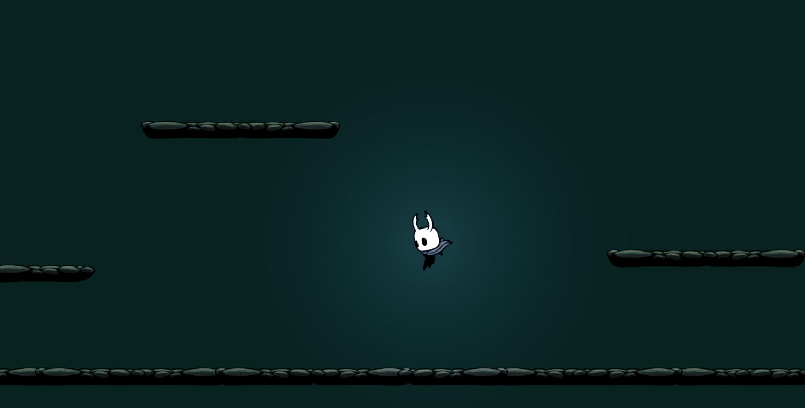
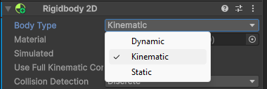
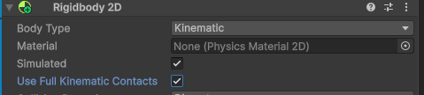
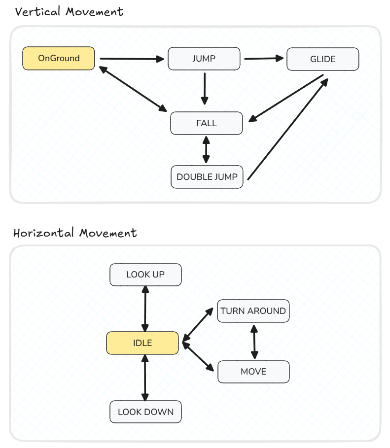
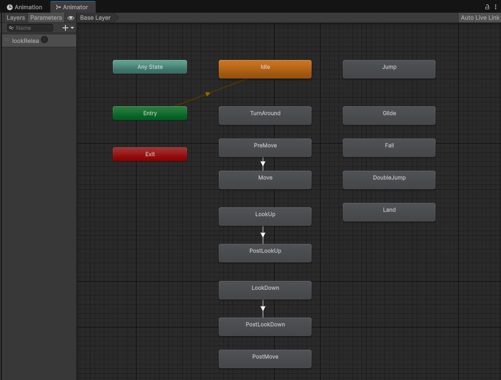
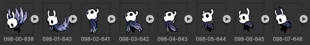
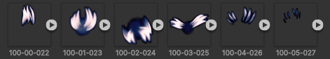
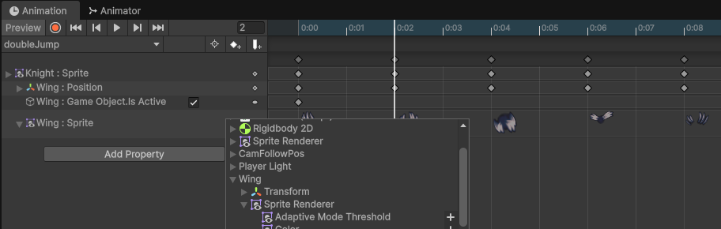
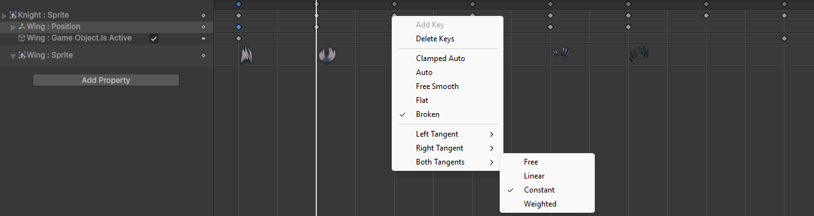

空洞騎士重現 - Kinematic Rigidbody

在上次慘痛的成品後，我開始思索開發上遇到的各種問題，其中一點便是難以控制的角色運動，由於目前使用 force 來移動角色，當改變移動方向時就需要施加反方向更大的力，在跳躍時更是明顯，為了讓角色能更快的下墜，我是把小騎士的重力係數上調超大，但就需要同步上調跳躍力才能正常起跳，就是這樣彼此拉扯、牽一髮動全身，這麼麻煩還不如直接控制角色的 movement (移位) 更簡單，所以本篇要推翻前面使用的 dynamic rigidbody (force) 改用更簡化的 kinematic rigidbody (movement)。
Kinematic RigidBody

在小騎士的 rigidbody body type 選項中，有三種類型:
- Dynamic - 接近現實物理模型，物體具有質量且能對力做出反應，有加速度、速度、重力、摩擦力等屬性，並且會處理物體間的碰撞反彈，同時消耗較多的運算資源。
- Kinematic - 不具備力與速度，而是直接控制物體的位置，這樣的好處在於直觀且無須多餘的計算，物體完全由開發人員控制。
- Static - 完全靜態的物件，不會移動，可以套用在地面與牆壁等物件，基本上等同於 no rigidbody 但多了彈性可以切換成其他 type。
MovePosition
首先直接把小騎士的 body type 改成 kinematic，就會發現會跟封面圖一樣卡在半空中維持落下的動作，這是因為現在沒有重力了，必須撰寫程式讓他落下:
// Player.cs
void FixedUpdate()
{
Vector2 speed = Vector2.zero;
if ( !isGrounded() )
{
speed.y = FallSpeed; // -5
}
Vector2 newPosition = rb.position + speed * Time.fixedDeltaTime;
rb.MovePosition(newPosition);
}
MovePosition 的方式來進行移動，而程式就是替小騎士計算一個新的座標 - 隨時間往下降的座標，另外由於現在沒有任何碰撞機制，所以落到地面也會直接穿過去，得自己偵測是否已經著陸 - 使用上次撰寫的 raycast ground detection，已經著陸就停止座標下降。
補充 Ground Detection
補充一下除了 raycast 外更簡單的 Ground Detection 方法，就是透過小騎士身上的 collider，前面雖然有說 kinematic rigidbody 不會產生碰撞等物理現象，但依舊可以取得碰撞當下的 event - 啟用 Use Full Kinematic Contacts，透過這個 event 就能判別是否碰撞到地面。
kinematic 和 dynamic rigidbody 間的碰撞本來就會觸發 collision event，"Use Full Kinematic Contacts" 則是讓 kinematic 能與 kinematic / static rigidbody 也能產生!!

為了確保碰撞的是地面，在 OnCollisionEnter2D 碰撞觸發時，偵測碰撞對象的 tag 是否為 Floor; 為了避免接觸到的是牆壁 (tag 一樣)，偵測碰撞時方向是向下 (法向量向上); 同時記住接觸時的物件，因為在 OnCollisionExit2D 時無法偵測方向，必須確保是離開接觸時的地面，不然碰到牆壁離開也會判定成離開地面 !!!
bool touchGround;
GameObject lastTouchedGround;
void OnCollisionEnter2D(Collision2D other)
{
if ( other.gameObject.CompareTag("Floor") && other.GetContact(0).normal == Vector2.up )
{
touchGround = true;
lastTouchedGround = other.gameObject;
}
}
void OnCollisionExit2D(Collision2D other)
{
if ( lastTouchedGround != null && other.gameObject == lastTouchedGround )
{
touchGround = false;
lastTouchedGround = null;
}
}
這個方法雖然不用像 raycast 要調整參數，但會產生許多判定上的問題，像是如果地面是傾斜的，判定條件得修改，另外地面 sprite 沒有切齊，很可能會有誤判，加上只在 collision 發生與結束時判定，一旦誤判就會有嚴重問題，像是角色直接穿過地面，因此之後還是會使用 raycast 的方式來實作 ~~~
Get Maximum Movement
由於前面的 Ground Detection 只是偵測碰到地板了，加上角色移動速度太快，可能會發生角色已經一半身體都卡進地板才停下來，所以除了要計算是否接觸地面，還得要計算每次移動是否會穿牆並限制移動的距離，同樣透過 ray cast 實作:
rb.Cast- 以角色的碰撞箱根據移動方向、距離去計算是否會碰撞給定類型的物件，將碰撞的結果由近到遠保存在 hitResults，並回傳碰撞數量。- 對每個碰撞的物件去計算是否為水平或是垂直方向碰撞，因為是由近到遠，所以兩者都遇到過就可以提前結束計算。判斷碰撞方向是根據法向量的角度，跟之前的 ground detection 一樣。
- 發生碰撞後根據碰撞物體的距離
closestHit.distance來限制移動，重點在於不要直接移動到碰撞的座標，這樣會導致下次計算時無法移動，例如角色站在地面上時會無法左右移動，因為 y 軸會導致每次closestHit.distance = 0，即便根本沒有向下移動，所以每次移動都離碰撞點多一個小數字 (MiniGap)。
// Player.cs
[SerializeField] LayerMask GroundLayer;
[SerializeField] float MiniGap = 0.02f;
RaycastHit2D[] hitResults = new RaycastHit2D[10];
void FixedUpdate()
{
...
Vector2 newPosition = rb.position + GetMaximumMovement(speed * Time.fixedDeltaTime);
rb.MovePosition(newPosition);
...
}
Vector2 GetMaximumMovement(Vector2 movement)
{
if (movement.magnitude < MiniGap) return Vector2.zero;
Vector2 direction = movement.normalized;
int hitCount = rb.Cast(direction, GroundFilter, hitResults, movement.magnitude);
bool xClamped = false, yClamped = false;
for ( int i = 0 ; i < hitCount ; i++ )
{
RaycastHit2D closestHit = hitResults[i];
Vector2 clampMovement = direction * closestHit.distance;
float angle = Vector2.SignedAngle(closestHit.normal, Vector2.up); // from normal to up (-180 ~ 180)
if ( angle < 10f && angle > -10f && !yClamped )
{
movement.y = clampMovement.y + MiniGap;
yClamped = true;
}
else if ( angle > 170f || angle < -170f && !yClamped )
{
movement.y = clampMovement.y - MiniGap;
yClamped = true;
}
if ( angle < 100f && angle > 80f && !xClamped )
{
movement.x = clampMovement.x + MiniGap;
xClamped = true;
}
else if ( angle < -80f && angle > -100f && !xClamped )
{
movement.x = clampMovement.x - MiniGap;
xClamped = true;
}
if ( xClamped && yClamped )
{
return movement;
}
}
return movement;
}
Player State Machine

接下來就是去實作移動與跳躍等操作，但為了避免每個操作所施加的速度彼此打架，我們要引入狀態機的概念，類似之前實作的 animator 的狀態機 (上圖)，每次角色只會處在一個狀態中，然後根據不同狀態來設定輸出的速度與動畫，這樣的好處很多，不僅能解決操作的手感問題，還能大幅簡化 animator 狀態機的複雜度，因為現在狀態機是由程式控制的。
State
// StateMachine.cs
public abstract class State
{
protected Configuration Config;
protected OutputData outputs;
protected float elapsedTime;
protected State(Configuration config, int animeCode)
{
Config = config;
outputs = new(Vector2.zero, Vector2.zero, animeCode);
}
public void Enter(InputData inputs, PropagateData pdata)
{
elapsedTime = 0f;
OnEnter(inputs, pdata);
}
protected virtual void OnEnter(InputData inputs, PropagateData pdata) {}
public void Exit()
{
OnExit();
}
protected virtual void OnExit() {}
public abstract StateCode Transition(InputData inputs, PropagateData pdata, float dtime);
public virtual OutputData GetAction()
{
return outputs;
}
}
- 初始化 - 目前每個狀態都只是繼承模板的設定，將角色的設定檔讀進來，例如移動速度、等待時間等等，方便進行後續調參，並且初始化輸出: movement vector、rotate vector、以及最重要的 animation code，讓程式能直接根據狀態播放動畫。
- 進入狀態 - 預設是會將進入狀態的計時歸零，然後執行每個狀態自訂的 OnEnter function。
- 轉換狀態 - 這就是最重要的部分了!! 撰寫達成哪些條件才會切換成其他的狀態，會根據
inputs- 玩家的操作 & 環境的回饋、pdata- 前面狀態的紀錄共同決定下一個狀態，這邊回傳的是 enum 的代碼，外部會再根據代碼選擇對應的狀態。 - 離開狀態 - 離開狀態時採取的行動，暫時沒有用到 ~~~
- 取得行動 - 暫時只是用來讀取 outputs 的數據。
以前面提到的墜落狀態為例，進入此狀態時會設定 y 軸速度，其實可以在初始化設定就好，但為了在執行時調整參數，所以才改成這樣，另外狀態切換的部分分成兩條路:
- 著陸 - 角色落地了，直接切到著陸的狀態。
- 二段跳 - 玩家按下的跳躍鍵並且還沒有二段跳才能切過去，在進入二段跳狀態時會把
pdata.isDoubleJumped = true，然後在進入著陸後的狀態才切回 false，以此避免空中連續跳躍，至於jumpButtonPress是為了避免玩家一直壓著跳躍鍵影響手感 - 起跳後要先放開跳躍鍵再按一次才會變成二段跳。
// StateMachine.cs
public class FallState : State
{
static readonly int animeCode = Animator.StringToHash("Fall");
public FallState(Configuration config) : base(config, animeCode) {}
protected override void OnEnter(InputData inputs, PropagateData pdata)
{
outputs.speed.y = -Config.fallSpeed;
}
public override StateCode Transition(InputData inputs, PropagateData pdata, float dtime)
{
if ( inputs.onGround )
{
return StateCode.Land;
}
else if ( inputs.movement.y > 0 && inputs.jumpButtonPress && !pdata.isDoubleJumped )
{
return StateCode.DoubleJump;
}
return StateCode.Fall;
}
}
State Machine
底下是最終實作出狀態機，正確來說是兩個狀態機，分成垂直與水平運動兩個獨立的狀態機，會這樣區分主要是因為很多動作發生在空中或是地面其實差不多，像是你在空中也能進行水平移動、轉身、攻擊等等，如果弄成單獨狀態數量會變太多，不如分開管理，至於在動畫播放上垂直狀態機的優先權比較高，除非垂直狀態的動畫沒設定 (ex: OnGround state) 才會播放水平狀態的動畫。
至於各個狀態大概就是字面上的意思，但有兩個想特別說明:
- Glide - 這個狀態是當玩家長時間按著跳躍鍵到最後，會讓小騎士跳到最高點後有一小段制空的時間，落下速度會較慢，同樣當二段跳如果也按夠久也能夠進入此狀態。
- Turn around - 代表玩家水平移動改變方向，一開始我並沒設定可以直接從 Move 狀態切換過去，我以為 unity 中按鍵讀取是沒辦法直接左右轉換，必須先放開本來的按鍵不然會兩者抵銷，也就會先切到 Idle 狀態才會到 Turn around，但實測上確實有機會按出左右直接切換 => 左右抵銷的時間短到狀態機還沒補捉到 !! 然後就會導致小騎士直接上演月球漫步 XD

Animation State Machine

當我們完成角色在程式中的狀態機後，再回頭過來修正動畫狀態機，就會發現一個天大的好處，動畫狀態機變得超簡單的 ~~~ 大部分動畫都是獨立，主要就是配合程式內的狀態機輸出來達成動畫切換:
// Player.cs
void Update()
{
overallStateMachine.Transition(inputs, Time.deltaTime);
OutputData outputs = overallStateMachine.GetAction();
if ( outputs.currAnimationCode != outputs.nextAnimationCode )
{
animator.Play(outputs.nextAnimationCode, 0, 0);
}
...
}
overallStateMachine 就是前面提到兩個狀態機的包裝，對全部狀態機更新後，如果輸出動畫與當下播放的不同，則改播新的動畫，animator.Play(..., 0, 0); 的第一個 0 是代表 animator 的第一個 layer，而第二個 0 則是從第一個 frame 開始播放。
補充帝王之翼動畫
原先以為二段跳也只是一般的動畫播放，但實作時發現整個動畫是由兩段獨立的 sprites 構成，小騎士的跳躍動作以及額外翅膀的動畫。


為了讓翅膀與小騎士的動畫能匹配上，需要借助 unity 動畫視窗的 property 功能:
- 將翅膀的 sprites 設定成小騎士的子物件。
-
Add Property > Wing > Sprite，然後將動畫 sprites 放過去。

- 對齊兩邊動畫的時間點。
- 使用 錄製功能 在每一個 key frame 上調整翅膀的位置，會自動產生出
Wing:Position property。 - 我們只希望動畫播放時翅膀才出現，在錄製第一個 frame 時才把翅膀 Enable，然後最一個 frame 在 Disable。
-
Unity 動畫錄製時位置的變動預設是線性移動，所以播放時翅膀會慢慢地飄移，看起來會很奇特，所以這邊改成瞬間移動到指定位置，點選
Wing:Position property的每一個 key frame，然後修改Both Tangents > Constant。
成品
可以看到採用了 Kinematic Rigidbody 以及狀態機後移動、跳躍、落下都相當順暢，並沒有出現穿牆、卡住等問題，另外把上次欠各位的二段跳完成了，更重要的是整個程式框架相當容易擴充，能讓我們後續重現各種功能時更為快速 ~~~
總結
本次花了點時間把過去實作的功能進行程式架構的優化，導入了 Kinematic Rigidbody 以及狀態機來讓角色的移位更加順暢，下次就來探討鏡頭的優化 - 導入 cinemachine。